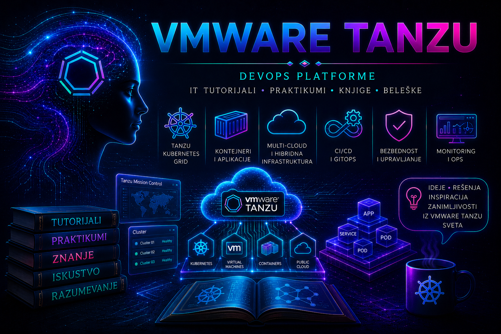

VMware & Tanzu

Završetkom ovog tutorijala Tanzu više ne treba posmatrati kao skup proizvoda, administrativnih ekrana, Kubernetes objekata i pojedinačnih procedura. Pred čitaocem je povezana platforma čije ponašanje nastaje međudelovanjem vSphere infrastrukture, vSphere Supervisor-a, Supervisor Namespace objekata, VKS klastera, mrežnih i storage servisa, identiteta, bezbednosnih politika, platformskih komponenti i aplikacionih workload-a. Nijedan od tih slojeva nije potpuno samostalan, pa se ni pouzdanost platforme ne može procenjivati posmatranjem samo jednog njenog dela.
Omogućen Supervisor, kreiran VKS klaster i aplikacija čiji su Pod objekti u stanju Running predstavljaju važan tehnički rezultat, ali još ne dokazuju da je platforma spremna za ozbiljan operativni rad. Instalacija postaje upravljiva platforma tek kada su poznate njene zavisnosti, određene granice odgovornosti, kontrolisani pristupi, uspostavljene politike resursa, dokumentovani tokovi saobraćaja i obezbeđena vidljivost stanja kroz sve slojeve sistema.
Upravljiva platforma mora imati poznato početno i željeno stanje. Za njene komponente moraju biti evidentirani vlasnik, namena, verzija, kritičnost, podržane kombinacije, infrastrukturne zavisnosti i način održavanja. Klaster koji funkcioniše, ali nema vlasnika, nije uključen u inventar, monitoring, backup i proces upravljanja promenama ili nema dokumentovan put oporavka, nije zrela produkciona platforma.
Zbog toga se uspešna implementacija ne završava potvrdom da je određeni zadatak u korisničkom interfejsu označen kao završen. Ona se završava tek kada su provereni Kubernetes API, dostupnost control plane-a i worker čvorova, DNS i NTP, mrežni tokovi, load balancer, storage provisioning, identiteti, sertifikati, pristup korisnika, platformski servisi i funkcionalnost aplikacije. Stanje pojedinačnog objekta jeste dokaz samo za taj objekat; funkcionalna provera potvrđuje da čitav lanac zavisnosti pruža očekivanu uslugu.
Najvažniji rezultat ovog tutorijala nije pamćenje određene komande, YAML manifesta ili putanje kroz grafički interfejs. Njegov rezultat je mentalni model koji omogućava da čitalac razume gde se određena komponenta nalazi, ko njome upravlja, od kojih servisa zavisi, kojim slojevima prolazi zahtev i kakve posledice promena može proizvesti izvan neposrednog objekta nad kojim se izvršava.
Kada aplikacija nije dostupna, simptom koji vidi korisnik ne određuje automatski mesto kvara. Uzrok može postojati u aplikaciji, Kubernetes konfiguraciji, schedulingu, image registru, tajnama, admission politici, Service ili Ingress sloju, CNI mreži, load balancer-u, DNS-u, sertifikatu, CSI integraciji, storage sistemu, VKS čvoru, Supervisor-u ili vSphere infrastrukturi. Sistematična dijagnostika zato prati zahtev kroz slojeve i za svaku pretpostavku traži dokaz.
Isto pravilo važi i za promene. Nadogradnja VKS klastera nije izolovana promena Kubernetes verzije, već deo kompatibilnog lifecycle lanca koji može obuhvatiti vSphere, Supervisor, podržana Kubernetes izdanja, VM images, CNI i CSI komponente, pakete, operatore, ingress sloj i aplikacije. Skaliranje klastera ne može nadoknaditi nedostatak fizičkog kapaciteta, a deklarativno kreiranje resursa ne može ukloniti zavisnost od mreže, storage-a, identiteta i spoljašnjih infrastrukturnih servisa.
Zrelost administratora i platformskog tima vidi se upravo u sposobnosti da apstrakciju povežu sa stvarnom infrastrukturom. Kubernetes omogućava deklarativno izražavanje željenog stanja, ali procesori, memorija, mrežni putevi, datastore sistemi, sertifikati i sistemi identiteta ostaju stvarni resursi sa ograničenjima i sopstvenim životnim ciklusom. Pouzdana platforma nastaje tek kada su oba pogleda prisutna u istoj arhitekturi i istom operativnom modelu.
Jedan od osnovnih principa knjige jeste da promena sama po sebi nije problem, ali nekontrolisana promena jeste. Svaka značajna operacija treba da ima dokumentovan cilj, početno stanje, preduslove, procenu rizika, plan implementacije, očekivani rezultat, kontrolne tačke, kriterijume prekida, rollback uslove i završnu validaciju. Promena je završena tek kada je potvrđeno da je proizvela očekivani tehnički i poslovni rezultat.
Isti princip primenjuje se na automatizaciju. API, CLI, GitOps i deklarativne konfiguracije ne predstavljaju vrednost samo zato što uklanjaju ručni rad. Njihova prava vrednost nastaje kada operacije postanu ponovljive, idempotentne, verzionisane, proverljive i povezane sa tragom odobrenja i izvršenja. Automatizacija ne sme samo brže ponoviti postupak; ona mora smanjiti neodređenost, sprečiti nedoslednost i omogućiti pouzdanu proveru rezultata.
Bezbednost takođe nije završna kontrolna lista koja se primenjuje nakon implementacije. Ona počinje arhitekturom identiteta i poverenja, nastavlja se principom najmanjih privilegija, namespace izolacijom, kvotama, mrežnim i admission politikama, zaštitom tajni, proverom image-a i kontrolom software supply chain-a, a potvrđuje se audit tragom i kontinuiranim proverama. Platforma nije bezbedna samo zato što je pristup ograničen; mora biti moguće dokazati ko je pristupio sistemu, koju je radnju izvršio i kakva je promena nastala.
Ni backup se ne može smatrati uspešnim samo zato što je zadatak izvršen bez prijavljene greške. Snapshot nije nužno potpuna rezervna kopija, kopija nije dokaz da je restore moguć, a vraćen resurs nije dokaz da je poslovna usluga obnovljena. Oporavak je potvrđen tek kada su podaci vraćeni, zavisne komponente pokrenute odgovarajućim redosledom, aplikacija dostupna, integritet proveren i postignuti rezultat upoređen sa definisanim RPO i RTO zahtevima.
Zbog toga je operativna validacija kroz game day prirodan završetak praktičnog dela knjige. Kontrolisano izazivanje kvara pokazuje da li alarmi prepoznaju problem, da li tim ume da sačuva relevantno stanje, da li dokumentovane procedure zaista vode ka oporavku i da li se usluga može vratiti bez oslanjanja na pretpostavke ili nedokumentovano znanje jednog administratora. RCA analiza i retrospektiva zatvaraju taj proces pretvaranjem incidenta u trajnu korektivnu meru i unapređenje platforme.
Tanzu platforma prirodno povezuje oblasti koje su u tradicionalnoj organizaciji često razdvojene. VMware administratori upravljaju infrastrukturnim kapacitetom i dostupnošću, platform tim definiše zajedničke servise i operativne standarde, razvojni timovi isporučuju aplikacione workload-e, a mrežni, storage, identitetski, bezbednosni, monitoring i backup timovi održavaju zavisnosti bez kojih platforma ne može pouzdano da radi. Granice odgovornosti moraju biti jasne, ali ne smeju postati granice razumevanja.
Supervisor Namespace i samouslužni pristup ne ukidaju upravljanje; oni ga pretvaraju u unapred definisan ugovor između platforme i njenih korisnika. Razvojni tim dobija pravo da koristi odobrene resurse i servise, dok platform tim zadržava kontrolu nad kapacitetom, klasama virtuelnih mašina, storage politikama, pristupima, mrežnim pravilima i podržanim verzijama. Sloboda korisnika i kontrola platforme nisu suprotnosti kada su pravila jasna, proverljiva i primenjena kroz politiku.
Dokumentacija je deo te zajedničke odgovornosti, a ne administrativni dodatak. Izvedena arhitektura, inventar, vlasništvo, zavisnosti, pristupni modeli, operativne procedure, backup i recovery planovi, poznata ograničenja i rezultati validacije moraju omogućiti drugom ovlašćenom stručnjaku da razume stanje platforme i bezbedno nastavi rad. Sistem koji može pouzdano da održava samo osoba koja ga je izgradila nije održiv enterprise sistem.
Inventar, tagovi i CMDB zato predstavljaju više od evidencije tehničkih objekata. Oni povezuju platformu sa poslovnom uslugom, vlasnikom, kritičnošću, troškovima, bezbednosnom klasifikacijom, podrškom, promenama i dekomisijom. Tek kada su te veze poznate, moguće je realno proceniti posledice incidenta, odrediti prioritet oporavka i doneti odgovornu odluku o promeni ili migraciji.
Interoperabilnost dodatno pokazuje da Tanzu ne treba posmatrati kao zatvoren kraj tehnološkog puta. Deklarativni Kubernetes resursi povećavaju prenosivost, ali aplikacioni sistem obuhvata i podatke, tajne, sertifikate, identitete, operatore, storage klase, mrežne kontrolere, ingress implementaciju, registry, monitoring i spoljašnje integracije. Kontrolisana migracija zato nije kopiranje YAML fajlova, već ponovno uspostavljanje i dokazivanje svih funkcionalnih, bezbednosnih i operativnih svojstava usluge na ciljnoj platformi.
Tri završna dodatka pretvaraju znanje iz pojedinačnih lekcija u jednu proverljivu celinu. Prvi uspostavlja laboratorijsko okruženje sa jasno dokumentovanim mogućnostima i ograničenjima. Drugi povezuje Supervisor, namespace, VKS klaster, mrežu, storage, registry, pakete, bezbednost, observability i aplikaciju u platformu spremnu za predaju razvojnom timu. Treći proverava kako ta platforma reaguje na kvar, kako se oporavlja i da li drugi ovlašćeni administrator može da ponovi postupak koristeći samo predate dokaze i dokumentaciju.
Time se zatvara puni životni ciklus platforme: od arhitektonske odluke i procene spremnosti, preko implementacije i predaje korisnicima, do svakodnevnog rada, nadogradnje, zaštite, incidenta, oporavka i retrospektive. Nijedna pojedinačna faza nije dovoljna sama za sebe. Njihova povezanost pretvara tehničku instalaciju u pouzdanu i održivu uslugu.
Kubernetes pri tome ne rešava automatski lošu aplikaciju, nedovoljno projektovanu infrastrukturu ili neuređen organizacioni proces. Kontejnerizacija ne uklanja tehnički dug, pipeline ne garantuje kvalitet promene, a stanje Ready ne potvrđuje poslovnu funkcionalnost. Tehnologija pruža mehanizme, ali pouzdanost nastaje iz dobrog dizajna, jasnih odgovornosti, kontrolisanih promena, kvalitetne dokumentacije i discipline da se svaka važna pretpostavka proveri.
Prava zrelost Tanzu platforme zato se ne meri samo brojem klastera, worker čvorova, Pod objekata ili automatizovanih deployment-a. Ona se vidi u tome koliko je sistem predvidiv, koliko su njegove zavisnosti poznate, koliko rano tim primećuje degradaciju, koliko bezbedno uvodi promene, koliko pouzdano obnavlja podatke i usluge i koliko jasno može da objasni tehnički rizik vlasnicima poslovnih procesa.
Završetak tutorijala nije kraj učenja, već trenutak u kome pojedinačne komponente prestaju da budu izolovani pojmovi i postaju razumljiv sistem. Čitalac sada ima osnovu da zvaničnu dokumentaciju određene verzije tumači u odgovarajućem arhitektonskom i operativnom kontekstu, da nove funkcije proverava u laboratoriji i da odgovornost za produkcionu platformu preuzima postepeno, na osnovu dokaza i potvrđenih procedura.
VMware & Tanzu u tom smislu predstavlja most između pouzdane infrastrukturne osnove i cloud-native načina razvoja i isporuke aplikacija. Taj most ne briše postojeće znanje, već ga proširuje; ne suprotstavlja stabilnost i brzinu, već ih povezuje kroz standardizaciju, automatizaciju, bezbednost i proverljive operativne postupke.
Najveća vrednost takve platforme nije u tome što skriva njenu složenost, već u tome što je čini razumljivom, kontrolisanom i deljivom između timova. Kada su slojevi, zavisnosti, odgovornosti i kriterijumi uspeha jasno definisani, Tanzu prestaje da bude samo skup proizvoda i postaje upravljiva Kubernetes platforma na pouzdanoj VMware infrastrukturi — platforma koju je moguće bezbedno menjati, nadgledati, dokazivo oporaviti i odgovorno razvijati tokom čitavog njenog životnog ciklusa.